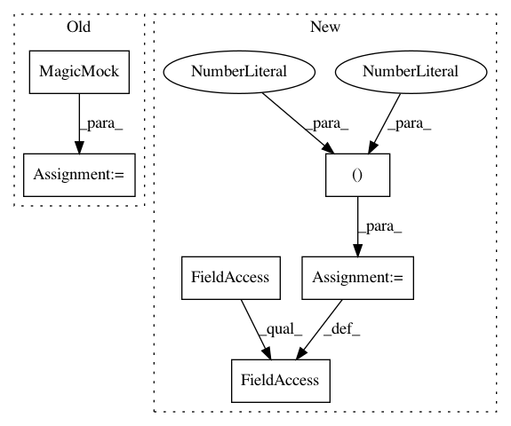

b1c99ba1008d472b26d306c579883d9a2b5b725c,lib/tests/streamlit/git_util_test.py,GitUtilTest,test_git_repo_valid,#GitUtilTest#,58
Before Change
def test_git_repo_valid(self):
with patch("git.Repo") as mock, patch("os.path"):
mock.git.return_value = MagicMock()
repo = GitRepo(".")
self.assertTrue(repo.is_valid())
After Change
with patch("git.repo.base.Repo.GitCommandWrapperType") as git_mock, patch(
"streamlit.git_util.os"
):
git_mock.return_value.version_info = (2, 20, 3) // A recent git version
repo = GitRepo(".")
self.assertTrue(repo.is_valid())
self.assertEqual((2, 20, 3), repo.git_version)
In pattern: SUPERPATTERN
Frequency: 3
Non-data size: 6
Instances
Project Name: streamlit/streamlit
Commit Name: b1c99ba1008d472b26d306c579883d9a2b5b725c
Time: 2020-12-03
Author: tconkling@gmail.com
File Name: lib/tests/streamlit/git_util_test.py
Class Name: GitUtilTest
Method Name: test_git_repo_valid
Project Name: home-assistant/home-assistant
Commit Name: 1ceee2d6c5904216c974c914bf37bbf3ee689ef0
Time: 2016-01-19
Author: paulus@paulusschoutsen.nl
File Name: tests/components/test_mqtt.py
Class Name: TestMQTTCallbacks
Method Name: test_mqtt_subscribes_topics_on_connect
Project Name: home-assistant/home-assistant
Commit Name: 8fbb5858743dc4f356bdff3f0126899aad9c3aa8
Time: 2016-01-17
Author: paulus@paulusschoutsen.nl
File Name: tests/components/test_mqtt.py
Class Name: TestMQTTCallbacks
Method Name: test_mqtt_subscribes_topics_on_connect